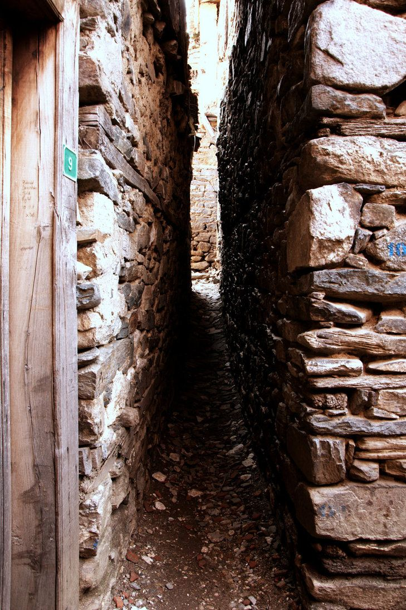

UNESCO Dünya Mirası Listesi'nde bulunan Cumalıkızık'ın kuruluş hikâyesinin 1300'lü yıllara kadar uzandığı biliniyor. Osmanlı'da erken dönem sivil mimari örneklerine ev sahipliği yapan köy, Uludağ'ın çevresine kurulan yedi kızık köyünden biri. O zamanlar dağ eteklerine kurulan köyleri tanımlamak için 'kızık' sözcüğü kullanılıyordu. Bu köylerden Cumalıkızık, Hamamlıkızık, Derekızık, Fidyekızık ve Değirmenlikızık olmak üzere beşi günümüze kadar ulaşmış. Aralarında orijinal dokusunu korumuş olan ise Cumalıkızık.
Hafta sonu günü birlik bile gelebileceğiniz bu güzel köye, Bursa merkezden kalkan dolmuşlarla yaklaşık 20 dakikalık bir yolculuk sonunda ulaşabiliyorsunuz. Köy meydanına indiğinizde sizi karşılayan tezgâhlar ve yöresel ürünleri satan köylülere uğramadan olmaz. Doğal köy usulü reçeller, salçalar, turşular, erişteler, tarhanalar, köy ekmekle ve daha neler neler... Meydandan yukarıya doğru yürüdüğünüzde ise ilk olarak Uludağ'dan gelen suyun köyün içinden aktığını göreceksiniz. Kerpiçten yapılmış tarih kokan evler, renk renk duvarlar, kapı tokmakları, sokak çeşmeleri, daracık sokaklarla adeta sizi dünyadan soyutlayarakgeçmişe taşıyor Cumalıkızık...
Köyde yaklaşık 250'yi aşkın ev bulunuyor. Ancak restorasyonlarla evlerin yarısı kullanılır durumda.2002-2004 yılları arasında yayınlanan 'Kınalı Kar' ciddi şekilde ünlenerek ziyaretçi akınına uğramış.
Köyün içinde dolaşırken insan buranın tarihini, kuruluşunu ya da efsanesini merak etmiyor değil... Kuşaktan kuşağa aktarılan efsanelere göre Tokat civarında yaşamakta olan Oğuz boyularından Kızıklar, 'Karakeçili Aşireti'nin bulunduğu bölgelere göç ederek Ertuğrul Gazi'den yerleşmek için yurt isterlermiş. Ancak Karakeçili Aşireti, Kızıklar'ın bu isteğine karşı çıkmış. Bunun üzerine Ertuğrul Gazi, düşmanlıklar doğmaması için Kızıklar'a Uludağ'ın o zamanki adıyla 'Keşiş Dağı'nın kuzey eteklerinden yer göstermiş. İki Oğuz boyu arasındaki dostluğu sağlamak için de Kızık boyu beyinin yedi oğlunu Karakeçili Aşireti'nden yedi güzel kızla evlendirmiş.
"Cumalıkızık isminin nereden geldiğine dair rivayet ise şöyle, Kızık köylerindeki köylülerin eskiden Cuma namazı için toplandıkları yer olması nedeniyle bu isimle anılır olmuş." Doğal güzellikleri ve eşsiz tarihinin yanında bu köy efsanelerle ve ilginçliklerle dolu. Dünyanın en dar sokağı olarak anılan ''Cin Aralığı'' Cumalıkızık'ta bulunuyor... Efsaneye göre Kurtuluş savaşı zamanında Cumalıkızık köyünü basan Yunan askerleri tüm köylüleri camiye toplar ve camiyi yakmaya karar verirler. Köylülerde bir fırsat yakalayıp camiden kaçarlar köylülerin girdiği sokakta iki evin bittiği noktada ufak bir aralık vardır ancak bir insanın yan yan geçebileceği kadar büyüklükte olan aralık sokak girişinden bakıldığında çıkmaz yol olarak görünmektedir.

Köylüler bu sayede aralığın sonunda olan Türk askerlerinin konuşlandığı tepeye ulaşırlar. Yunan askerleri sokağın girişinde geldiğinde gözlerine inanamazlar ve şöyle: Bu insanlar buradan kaçması imkansızdır. Bu olsa olsa cinlerin işidir demiş ve o günden bugüne buranın adı 'Cin Aralığı' olarak kalmıştır.Cumalıkızık'da bir de yürüyüş parkuru bulunuyor. Uludağ'ın eteklerinde mutlaka yürüyüş yapmalısınız. Ayrıca köyün içerisinde 350 yıllık tarihi bir ev müzeye dönüştürülmüş, ziyaret edebilirsiniz. Son olarak gitmişken mutlaka köyün içerisinden akan suyun kaynağına giderek buz gibi suyun tadına bakmalısınız.